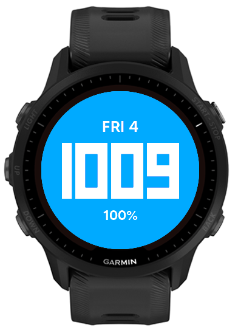
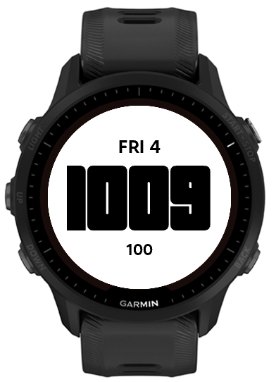
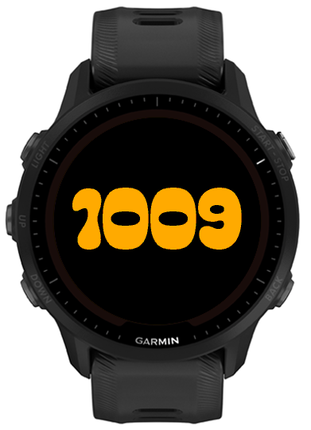
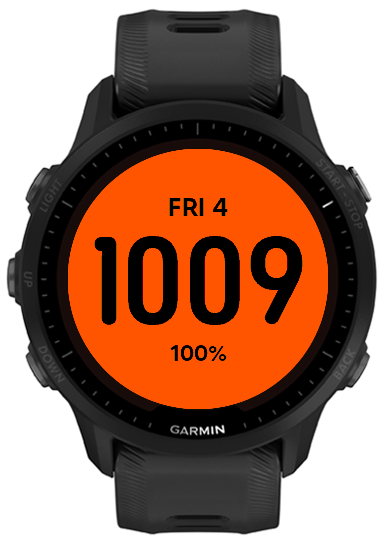
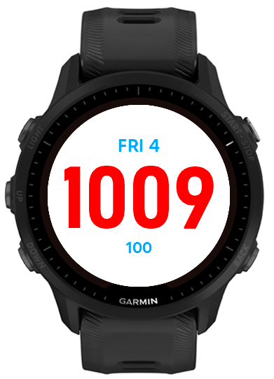
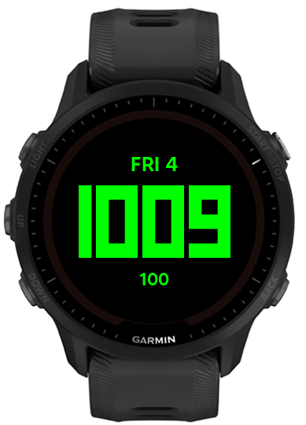
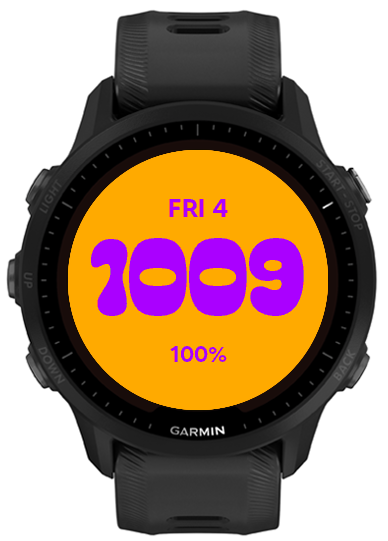
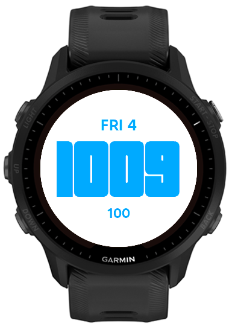

Four digits, no colon
Twenty-four-hour time removes the need for AM or PM. Dropping the colon leaves more room for the numbers, which matters on a round screen.
I wanted my new Garmin to feel less like a phone than my Apple Watch did. Typeface 955 shows only the time, date, and battery, with settings that keep those three values readable.









I switched from an Apple Watch to a Garmin because I wanted a watch that felt more like a tool and less like another phone. Most available faces still put far more information on screen than I wanted.
My requirements were specific. I wanted four-digit 24-hour time, the day and date, and an exact battery percentage. Everything would be white on black. I did not want a colon, icons, fitness rings, weather, animation, seconds, or anything that required a tap.
With only three values on screen, small choices became obvious. Font width affected the largest possible time size. Vertical spacing affected how quickly I could read the face. Update frequency affected how much work the watch performed throughout the day.
The time is by far the largest element. The date sits above it, and the battery sits below it. I can glance at the face and find the right value without scanning a grid of complications.
Twenty-four-hour time removes the need for AM or PM. Dropping the colon leaves more room for the numbers, which matters on a round screen.
The abbreviated weekday and date stay centered above the time. They are easy to find but small enough that the time still reads first.
A percentage tells me more than a small battery icon. A setting lets me hide the percent sign if I want an even cleaner display.
The default has maximum contrast and matches the rest of my watch setup. Color settings are there for people who want them, but the basic face stays plain.
I compared several font and battery layouts before choosing the default. The finished face includes five font choices, four date sizes, four battery sizes, optional color controls, and an optional percent sign. The settings preview updates on the watch, so the user can judge a choice on the real display instead of guessing from a list of names.
Garmin can call the face several times after a wrist gesture. The Forerunner 955 still needs a complete frame each time, but the strings behind that frame usually have not changed.
The normal update path makes one clock query. It reformats the time when the minute changes and rebuilds the date once per hour. Battery updates take a different route. The app subscribes to Garmin’s battery complication when it starts. When Garmin sends a battery event, the app refreshes the cached value and requests a screen update.
When the face becomes visible, it refreshes the cached battery immediately so the first glance after
charging is current. If the complication subscription is unavailable, the app falls back to reading
System.getSystemStats() once per hour. Changing whether the percent sign is shown only
reformats the cached value and does not trigger another battery query.
// Simplified rendering strategy
onStart() subscribeToBatteryChanges();
onBatteryChanged() {
cacheBatteryValue();
requestUpdate();
}
if (minuteChanged) formatTime();
if (hourChanged) formatDate();
draw(cachedDate, cachedTime, cachedBattery);Connect IQ handles fonts, resources, packaging, and updates differently from a web project. The round display also gives every line of text a hard width limit. I used the simulator while iterating, then tested major changes on my Forerunner 955 to check spacing and readability on the real screen.
One attempted battery optimization looked reasonable in the simulator: skip a draw when the visible values had not changed. On the watch, that could leave the screen black after a gesture. The hardware expects a complete frame on every update callback. I changed the design so every callback draws the full frame, while the code avoids repeating clock formatting, date lookup, battery polling, and font loading behind it.
That bug changed how I approached optimization: first satisfy the device’s rendering requirements, then reduce the work needed to prepare each frame.
My Forerunner 955 reports an estimated 19 days of runtime with Typeface 955, compared with 16 days using the most minimal, equivalent stock watch face I could find.
I have also noticed better battery performance in everyday use. The 19-day and 16-day figures are the watch’s estimates, not measured times between charges.